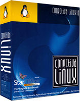
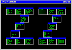
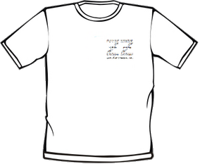
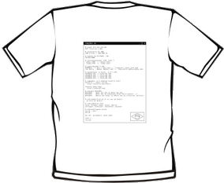

Oi, eu sou o Aurelio e criei as Funções ZZ em 22 de fevereiro de 2000. Parece que foi ontem, mas já passou tanto tempo, mais de uma década… Quer ouvir a história toda? Então senta aí que eu vou te contar.
Bem, eu trabalhava com Linux na Conectiva, e na época fazíamos vários pequenos shell scripts para automatizar tarefas repetitivas. Em geral eram scripts simples, de poucas linhas: consultar a lista de ramais, obter informações de pacotes RPM, coisas assim.
Estes scripts eram compartilhados entre os funcionários, na rede interna da empresa. Apesar de úteis, utilizar estes scripts era algo um pouco complicado para os funcionários iniciantes em shell, pois eram vários arquivos diferentes, tinha que copiar para alguma pasta do $PATH, tornar executável (chmod), lembrar do nome na hora de executar…
O conceito
Meu objetivo era facilitar o uso de meus scripts, para que mesmo leigos em shell pudessem operá-los. Desta necessidade nasceu o conceito das Funções ZZ:
- Em vez de vários arquivos picados, juntei tudo em um único arquivo. Transformei cada script em uma função, fazendo uma biblioteca.
- Sendo um único arquivo, ficava mais fácil compartilhar.
- Sendo uma biblioteca de funções, não precisava ser executável, nem estar no PATH. O arquivo podia ser copiado para qualquer pasta e não tinha mais a complicação do
chmod. - Para resolver o problema de lembrar o nome do comando (no caso, função), aproveitei-me do Tab-completion. Escolhi um prefixo comum e inédito para todas as funções (zz), assim o usuário pode digitar zz, apertar a tecla Tab duas vezes e pronto, aparecerão os nomes na tela, basta escolher.
A primeira versão contava com cerca de 10 funções, algumas de uso interno como a zzramal e zzrpmdisco, e outras já mais genéricas, como a zzdolar e a zzbabelfish, que consultavam a internet.
2000 — O lançamento público
Os funcionários da empresa gostaram, e nos meses seguintes foram sugerindo melhorias e funções novas. Após sete meses de evolução neste período encubatório, a biblioteca cresceu para 22 funções e decidi fazer o primeiro anúncio público do projeto, em 15/09/2000.
Curiosidade: Veja como era o código das Funções ZZ em 15/09/2000, esta é a versão mais antiga que tenho guardada.
Se me lembro bem, no início o projeto não teve grande repercussão. Os usuários foram aparecendo aos poucos. De vez em quando aparecia um comentário de alguém que tinha achado um problema ou tinha uma ideia de função nova.
Eu continuei tocando o projeto, que já era ferramenta de trabalho na Conectiva. Segui adicionando mais funções, as mais interessantes sem dúvida eram as que consultavam a internet:
- zzcep para consultar o CEP direto do site dos Correios
- zzdetran para consultar os dados do veículo do Detran-PR
- zzirpf para consultar sobre a restituição do Imposto de Renda
2001 — Funções ZZ no Conectiva Linux
Quando o projeto completou um ano e meio de existência (Out/2001), possuía cerca de 30 funções e conseguiu sua primeira grande conquista: foi incluído no Conectiva Linux. Os usuários da maior distro nacional de Linux agora podiam instalar o pacote funcoeszz.

Para mim foi muito emocionante, meu software ser usado no produto da empresa em que eu trabalhava.
Com esta exposição massiva, a base de usuários cresceu bastante. Fiquei mais motivado para seguir adiante, e o projeto ganhou em qualidade: são mais pessoas usando, testando e avisando de problemas. Principalmente nas funções que consultam a internet, elas param de funcionar sempre que o site consultado muda seu leiaute.
Para ajudar os usuários novatos, criei uma página para as Funções ZZ dentro de meu site, apresentando o projeto e dando instruções. E assim nasceu, tímido, o website das funções.
2002-2006 — Thobias
Quando o projeto completou dois anos (Fev/2002), recebi o primeiro email do Thobias Salazar Trevisan, um usuário que sugeriu uma função nova (zzsigla), e já mandou o código pronto dela. Isso era coisa rara!
Este foi o primeiro de muitos emails. O Thobias estava sempre antenado, participando do projeto: me avisava de bugs que encontrava, sugeria funções novas e contribuia com código.
Em um ano de contribuição voluntária ao projeto, ele já havia criado outras funções: zzrpmfind, zzpronuncia, zzhowto, zzsenha, zzlinuxnews, zzletrademusica. Como reconhecimento por seu trabalho e dedicação, e para oficializar o que já vinha ocorrendo na prática, em 06/05/2003 tornei o Thobias coautor das Funções ZZ.
Leia também: Eu seu site, o Thobias contou seu lado desta história.
Curiosidade: Nesta data, o projeto contava com 52 funções.
Juntos levamos o projeto adiante, continuando o trabalho infinito de arrumar as funções que quebravam e adicionar novas. A parceria deu certo, e além de diversas versões novas lançadas nos meses e anos seguintes, o mais importante é que nos tornamos bons amigos.
Programávamos juntos, porém à distância: eu no Paraná e ele no Rio Grande do Sul. Via chat do Skype discutíamos os problemas técnicos e ali mesmo colávamos os códigos e íamos melhorando até ficar pronto para entrar nas ZZ. Quer ver como era? Olha esse histórico de 8h de trabalho direto, insano!
A última versão que o Thobias participou ativamente foi a 6.11, de Nov/2006. Depois ele se dedicou mais à família e ao mundo offline, e passou a contribuir esporadicamente com as funções. O processo de desnerdização dele deu certo. Parabéns amigo!
Curiosidade: Eu e o Thobias criamos outro projeto em conjunto, chamado RAC. Trabalhamos nele de 2003 a 2005, mas infelizmente não foi pra frente :(
2003-2008 — Site, logo e camiseta
Um projeto de software envolve mais do que somente o código, então inventamos outras best^W, digo, outros meios de divulgá-lo.
O primeiro logo das Funções ZZ eu fiz em casa, no Paintbrush do Windows, no ano de 2003. Não é um primor de beleza, mas leve em conta que sou programador e não designer. Podemos considerá-lo "simpático" pelo menos? :)
|  | |
| 2003 | 2008 |
Já a versão de 2008 eu acho linda, perfeita, com as chaves representando o conceito de funções no Bash. Foi criada pelo Leonardo Boiko, que ganhou o concurso promovido em meu blog.
No início, o site das funções era abrigado dentro de meu site pessoal, no endereço aurelio.net/zz. Em 2005 comprei o domínio funcoeszz.net, que virou o endereço oficial das funções desde então.
Também em 2005 fizemos uma edição limitada de 50 camisetas das Funções ZZ para comemorar os 5 anos do projeto. Na frente, o ZZ é composto pelos nomes de todas as funções. Nas costas é um screenshot com as funções preferidas dos usuários, votadas em uma enquete na Internet. Felizmente conseguimos vender todas :)
|  |  |
| Clique na camiseta para ampliar | |
2008 — A nova geração das ZZ
De repente, caiu a ficha. Lembrei das ZZ e comecei a sentir vergonha. Que moral eu tenho para falar em código bonito se meu programa mais conhecido pelos shelleiros tem um código sopa-de-letrinhas? Casa de ferreiro…
Fui obrigado a resolver de vez o problema. Parei a escrita do livro e fiquei vários dias trabalhando no código das funções, reformatando, alinhando, colocando comentários, melhorando os nomes de variáveis, trocando algoritmos enigmáticos por versões simplificadas. Enfim, aquela reforma geral bonita de ver, de desmontar o jipe até os chassis, não sobrando nenhum parafuso no lugar.
http://aurelio.net/blog/2008/03/05/a-nova-geracao-das-funcoes-zz/
Precisei parar de contar a história pra fazer o lançamento da versão nova 13.2. Depois eu continuo, ok?
Atualização: Fiz um texto no blog, ponderando estes 13 anos de ZZ: http://aurelio.net/blog/2013/02/28/13-anos-de-funcoes-zz/

{kind=link}
{kind=link}